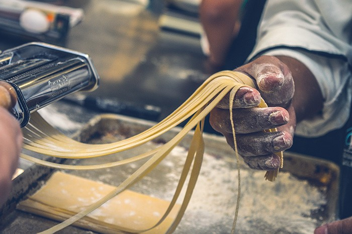
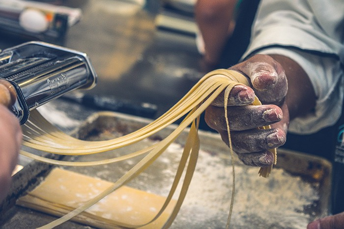

Le Restaurant
Vivez une expérience culinaire d’exception au sein du Restaurant « Bon Appétit », restaurant à mi-chemin entre gastronomie et bistronomie au cœur de la ville.
Dans une ambiance musicale et chaleureuse, notre chef signe une cuisine internationale élégante qui ravira vos papilles.
La Carte
Découvrez une cuisine conviviale et novatrice, inspirée de l'héritage et des voyages de notre Chef.
Burger du moment
Burger composé d'un pain brioché maison, d'un steak haché pur boeuf de 200g, salade, oignons rouges, raclette de savoie et chutney d'oignons
Tataki de thon

Tataki de thon accompagné de légumes de saison et d'une sauce légèrement relevée à base de soja
Risotto aux champignons
Risotto crémeux aux champignons sauvages et aux asperges
Galerie


 

Les derniers témoignages
 Elsa M. le 28/10/2025
Elsa M. le 28/10/2025
« Une expérience inoubliable ! Les plats étaient aussi beaux que délicieux, avec des saveurs parfaitement équilibrées.
Le service était attentionné sans être envahissant, et le cadre vraiment chaleureux. Nous reviendrons sans hésiter. Bravo au chef et à toute l’équipe ! »
 Julie L. le 23/10/2025
Julie L. le 23/10/2025
« Une soirée parfaite du début à la fin. Le cadre est plaisant et le personnel d’une grande gentillesse. Les plats étaient parfaits, avec des produits de grande qualité.
Mention spéciale pour le dessert, tout simplement sublime. Nous reviendrons avec grand plaisir. »
 Lena P. le 20/10/2025
Lena P. le 20/10/2025
« Cuisine fine, service impeccable et ambiance chaleureuse. Un vrai plaisir du début à la fin ! »